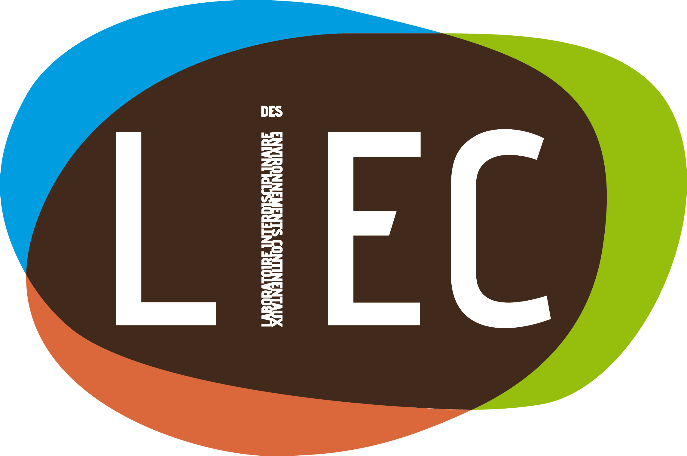
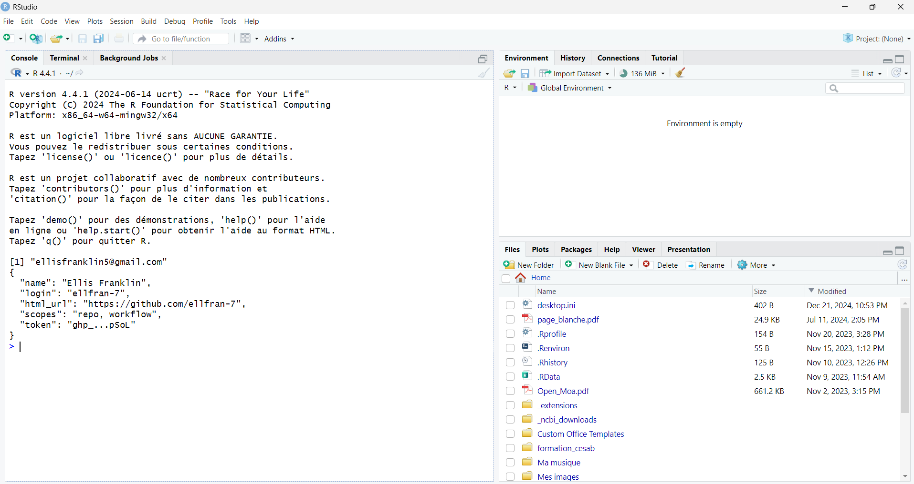

packages <- c("ggplot2", "quarto", "knitr", "rmarkdown")
installed <- packages %in% rownames(installed.packages())
if (any(!installed)) {
message("Missing some packages...")
install.packages(packages[!installed])
} else {
message("Everything is good to go!")
}Pre-workshop Instructions
LIEC - CS WORKSHOP
Welcome and thank you for you interest in participating in the following LIEC - CS WORKSHOP on February 6th 2025 entitled A step towards Reproducible Research: Literate Programming.

To ensure everything runs smoothly on the day of the workshop, we’ll need to set up a few things beforehand.
1 Brief Workshop Overview
The workshop will be divided into two parts:
- Reproducible Research: An Open Discussion
- Literate Programming with Quarto: A Small but Impactful Step
Part 1 will be discussion-based, focusing on the concept of reproducibility, its importance, and the factors contributing to non-reproducibility. There will be practical work also. No prior coding or bioinformatics knowledge is needed here.
Part 2 is hands-on and involves practical work using specific informatic tools. To participate fully, you’ll need to download or update these tools in advance. Don’t worry—they’re free and easy to set up! Let’s go!
2 General requirements
Please bring the following:
- 💻 a laptop/computer
- ✏️ a pencil/pen
- 📄 paper
- ☕ a mug (for coffee of course)
If needed, we can provide pencils, paper and even mugs!
No computer? Not a problem
If you are unable to bring your own computer, feel free to do the practical work with or following another participant 👯. In this case, please send me an email saying so!
3 Software requirements
The majority of the practical aspect of the workshop involves a computer, and therefor using specific tools. If you intend on participating fully, you’ll need to download (or update) these tools in advance. Don’t worry, they’re free and easy to set up! Let’s go!
3.1 The scientific and technical publishing system: Quarto
Quarto is an open-source system for scientific and technical publishing, built on Pandoc1. It allows you to create reproducible documents by integrating code, results, and narrative. Outputs can include HTML, PDF, Word, and more.
To use Quarto, you’ll need to install the Quarto CLI, which handles rendering Quarto documents. Download the latest version from the Quarto website and follow the installation instructions.
3.2 The programming language: R
R is a powerful programming language for data science. You can download it for free from The Comprehensive R Archive Network (CRAN). At the top of the CRAN homepage, you’ll find links for different operating systems: Windows, Mac, or Linux.
If you’re having trouble in orientating the sites, don’t worry! Below I provide detailed instructions for each operating system:
Download for Windows
To install R on Windows, click the “Download R for Windows” link. Then click the “base” link. Next, click the first link at the top of the new page. This link should say something like “Download R-4.4.2 for Windows”, except the 4.4.2 will be replaced by the most current version of R. The link downloads an installer program, which installs the most up-to-date version of R for Windows. Run this program and step through the installation wizard that appears. The wizard will install R into your program files folders and place a shortcut in your Start menu. Note that you’ll need to have all of the appropriate administration privileges to install new software on your machine.
Download for MacOS
To install R on a Mac, click the “Download R for Mac” link. Next, click on the R-4.4.2 package link (or the package link for the most current release of R). An installer will download to guide you through the installation process, which is very easy. The installer lets you customize your installation, but the defaults will be suitable for most users. I’ve never found a reason to change them. If your computer requires a password before installing new progams, you’ll need it here.
Download for Linux
R comes preinstalled on many Linux systems, but you’ll want the newest version of R if yours is out of date. The CRAN website provides files to build R from source on Debian, Redhat, SUSE, and Ubuntu systems under the link “Download R for Linux.” Click the link and then follow the directory trail to the version of Linux you wish to install on. The exact installation procedure will vary depending on the Linux system you use. CRAN guides the process by grouping each set of source files with documentation or README files that explain how to install on your system.
3.3 The IDE2: Rstudio
RStudio is an application like Microsoft Word—except that instead of helping you write in English or French, RStudio helps you write in R.
You can download RStudio for free. Just click the “Download RStudio Desktop For [Your OS]” button and follow the installation steps. Once installed, open RStudio like any other application—usually by clicking its desktop icon.
When you open RStudio, you’ll see a window with three panes, as shown below: (Figure 1):

3.4 The toolset: R packages
R packages are collections of functions, data, and documentation that expand R’s capabilities. To work with Quarto in R, ensure the following packages are installed:
ggplot2quartoknitrrmarkdown
To check and install these packages, run the following code in RStudio (in the console pane, shown on the left of Figure 1):
3.5 Finish line
If you encounter any issues with downloads or installations, feel free to email me at ellis.franklin@univ-lorraine.fr or visit me directly at the Metz site in the P7 building, office M3.
If you’ve successfully set everything up, you’re ready for the workshop! Congratulations! 🎉
See you on the 6th of Feb! 🐧